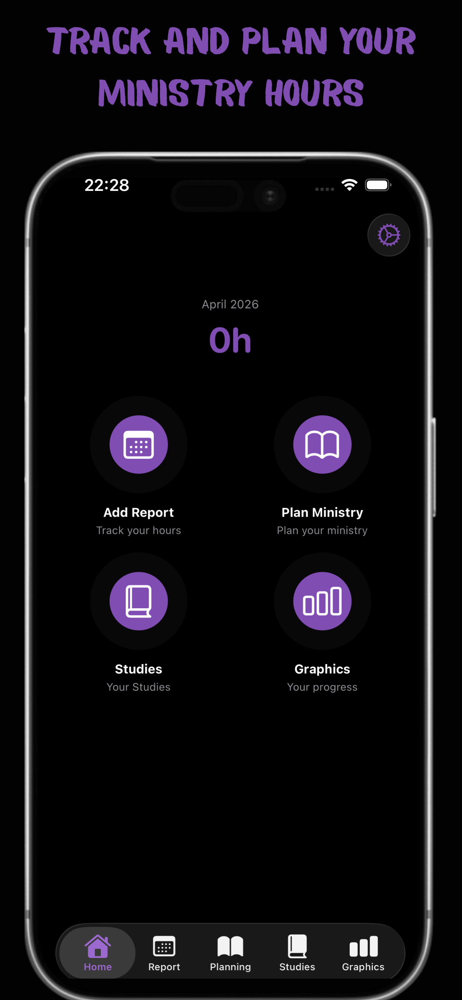
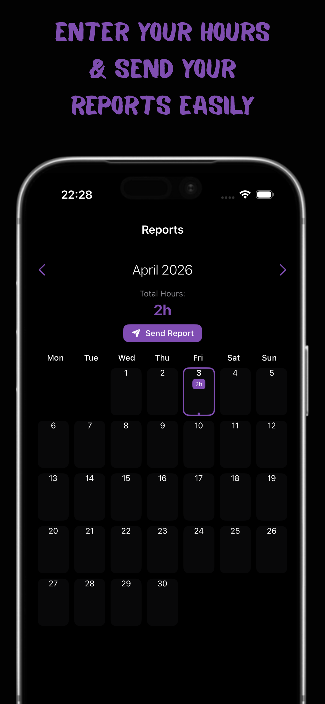
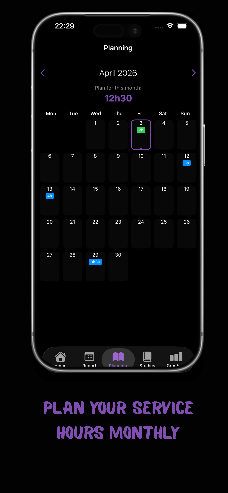
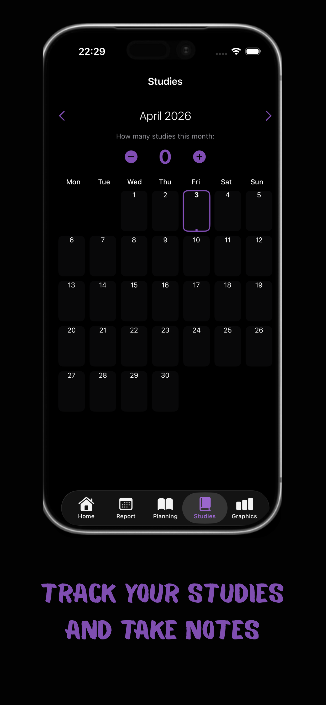
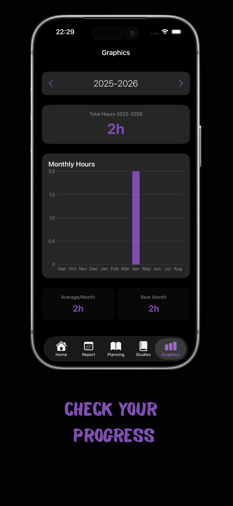
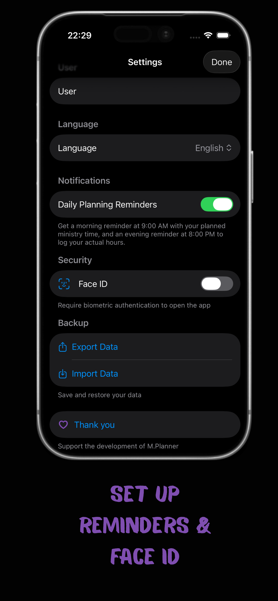

Log hours, plan your schedule, track Bible studies, and see your progress — all in one place.
Download on the App Store





Log your ministry hours by day. See monthly totals at a glance and send your report with one tap.
Plan your ministry schedule in advance. Color-coded days show you at a glance if you hit your targets.
Track the number of Bible studies per month — simple counter, always at your fingertips.
Visualize your ministry year with beautiful bar charts. Track your full service year (September–August).
Morning reminder with today's plan at 9 AM. Evening reminder to log your hours at 8 PM.
See today's planned hours and this month's total right on your home screen — no need to open the app.
Your data syncs automatically across all your Apple devices. Switch between iPhone and iPad seamlessly.
Free to download. No subscription. No account needed.
Download on the App Store